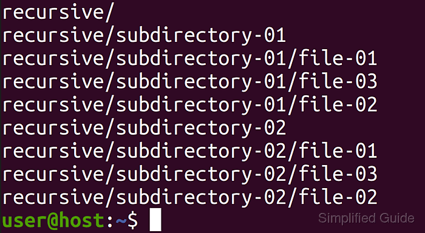

The git add command is a fundamental and crucial operation in the Git version control system. A recurrent need among Git learners is to add all files in a directory, or nested directories. To do that, we simply need one command. It is git add .. It works recursive as default,
If you want to do it in a subfolder, it is as easy as:
Note that you should prefer the . over the usage of * as the shell interprets it and replaces it with all the files and folders in the current directory.
You can use git add with the --all or --update option to stage removals of files that have been deleted.
As a final note, one could add files listed in the .gitignore (ignoring them) by adding the -f --force flag. If you do it in a directory, it is going to work recursively.